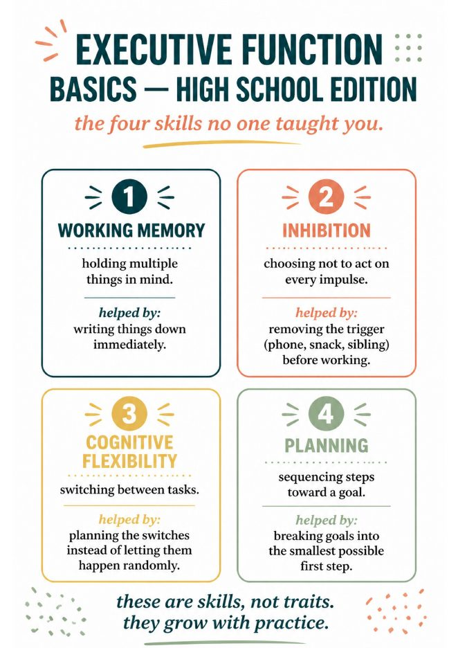
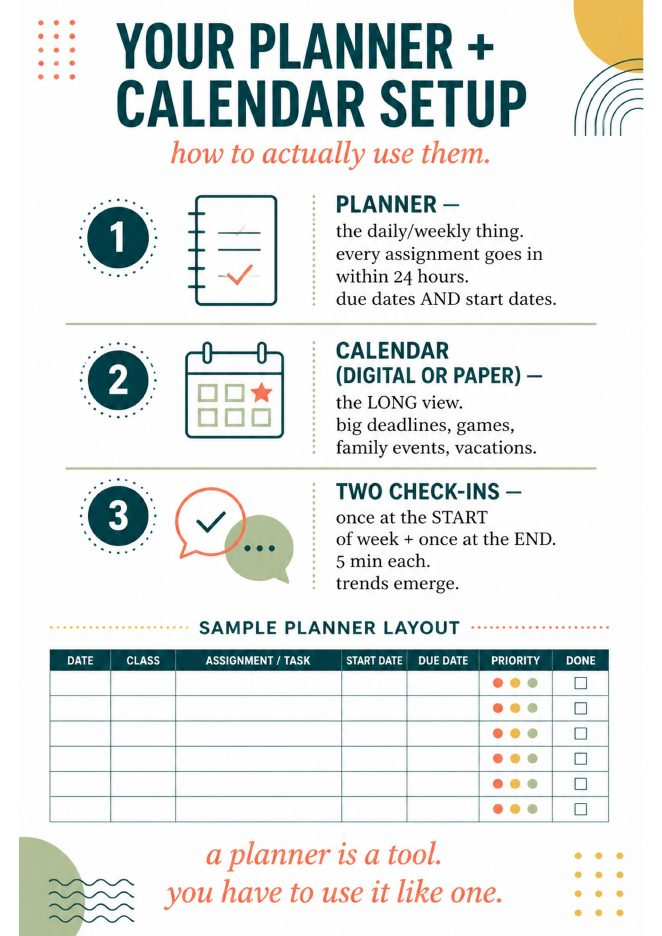
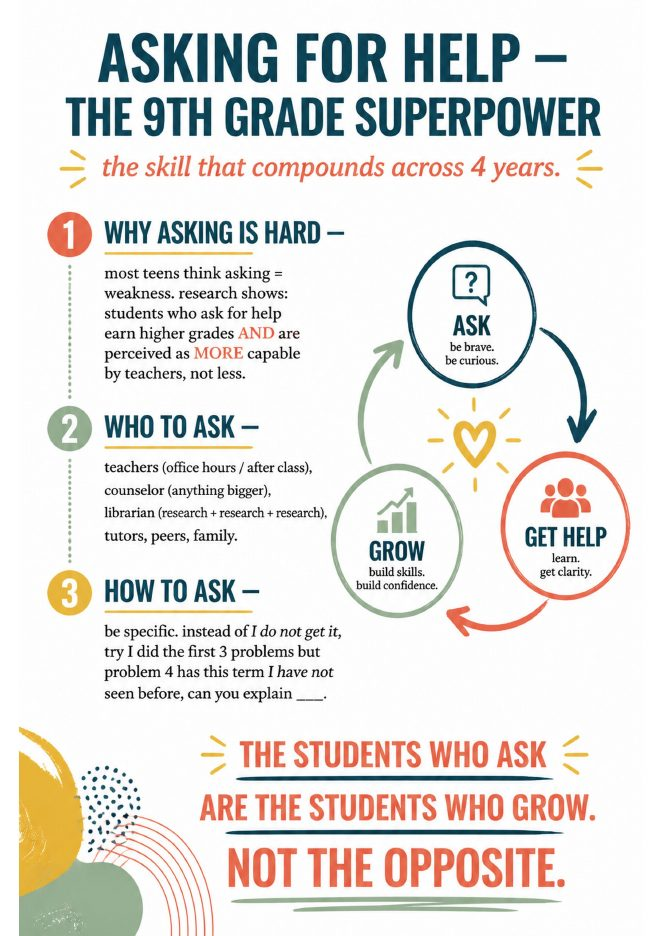
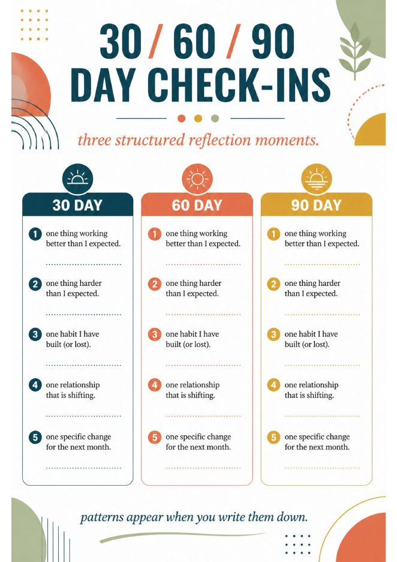
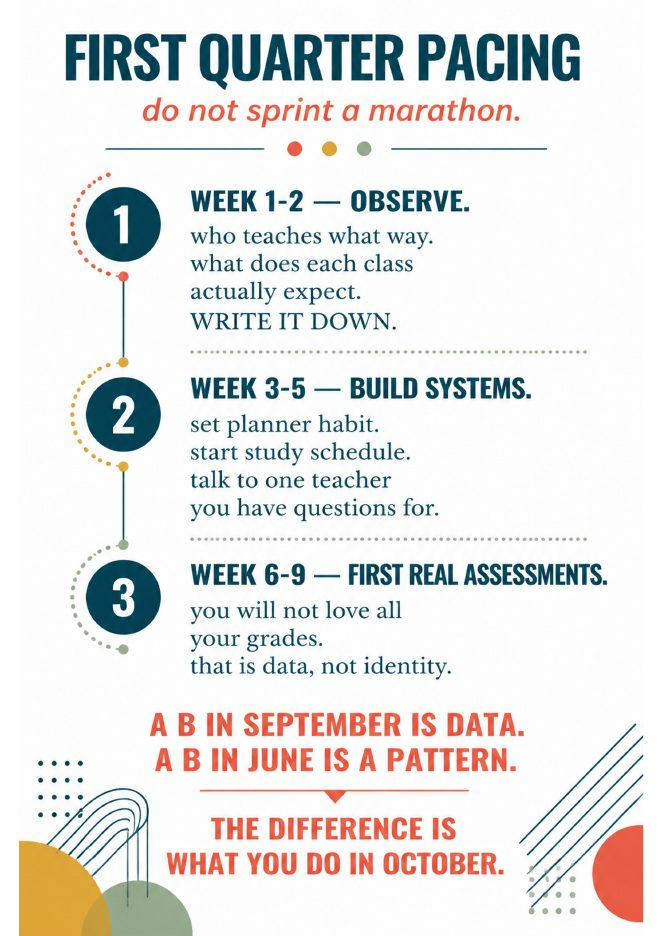
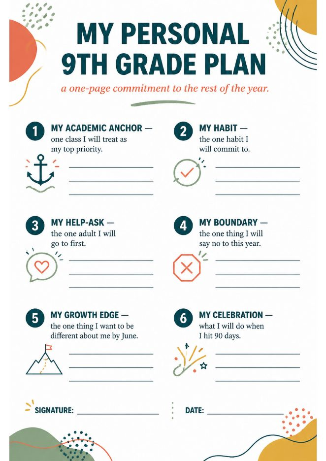
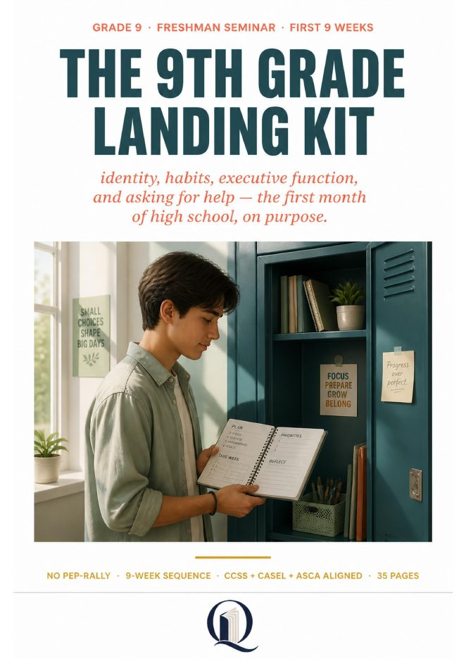

Quirepress
Quirepress
Why the first nine weeks decide the year
The research on ninth grade is unusually clear, and it comes mostly from one place. The UChicago Consortium has tracked Chicago freshmen for two decades, and the pattern holds: a student who finishes ninth grade with enough credits and no more than one failed semester of a core course is three and a half times more likely to graduate than one who does not. Freshmen who end the year with a B average graduate 95 percent of the time. One F in a year-long course knocks the odds of graduating down by about 30 points. Two Fs take a student from an 85 percent chance to 33.
The part that matters for advisory is what drives those failures. It is not harder content. The Consortium’s 2018 study found grades fall about a third of a letter in every core subject between eighth and ninth, and more than 85 percent of the drop is explained by attendance and effort, not course difficulty. Unexcused absences roughly quadruple. Students who passed middle school and then failed ninth grade described themselves, in one Connecticut study, as lazy or zoned out, and none of them knew where to go for help. Help arrived only after the F.
Advisory is the one period in the schedule built to catch that. Used for nine weeks of icebreakers and announcements, it catches nothing. Used for the skills below, it is the cheapest intervention a school has.
Weeks 1–2 · Observe
Welcome, and what high school actually is
Pages: welcome letter · the honest handout · pre-unit self-assessmentOne week of belonging, and it is a real week. Read the welcome letter aloud; it is short on purpose and it promises no pep rally. Then hand out the honest version of what high school is: not constant drama, mostly small decisions that stack, and a reputation with adults that compounds either way. Close with the pre-unit self-assessment. Students rate six statements, from “I know what high school is actually like” to “I feel ready for first semester,” and keep the page. They will rate the same six in week nine.
The job of week one is to write down how things work: who teaches what way, what each class actually expects. The kit calls this observing, and it is the only week where watching is the assignment.
The identity reset
Pages: identity reset · letter to your June selfNinth grade reshuffles everything, and the kit treats that as the opportunity it is. The identity reset page asks five questions: what you were known for in middle school, which labels still fit, which you are letting go, what you want to be known for by June, and one small action this week that points there. Identity is built by small consistent actions, not announcements, and the page says so.
Then the letter to their June self: what they hope to remember, what they are afraid of, what they are excited about, one person they hope to grow closer to, one promise. Sealed, collected, returned in June. Advisors who have done this say it is the page students talk about most, nine months later.
Weeks 3–5 · Build systems
Executive function basics
Pages: executive function, high school edition · 3-habit starterThis is the week most advisory programs skip, and it is the one the research points at. Four skills, named plainly: working memory, inhibition, cognitive flexibility, planning. Each with what it is, what it is helped by, and an example a fourteen-year-old recognizes. Inhibition is choosing not to act on every impulse, helped by removing the trigger before working. Planning is sequencing steps toward a goal, helped by breaking it into the smallest possible first step. The page ends with the line students need: these are skills, not traits, and they grow with practice.
Pair it with the 3-habit starter. Students pick three small daily habits from a menu (planner check every morning and evening, phone in another room while studying, 8 hours of sleep minimum) and track them for 30 days. Three is enough. Small is the feature.


Planner, calendar, and time blocking
Pages: planner + calendar setup · time blocking template · visual planner for ELL and visual learnersA planner is a tool, and most freshmen have never been taught to use one. The setup page gives three rules: every assignment goes in within 24 hours, with the due date and the start date; the calendar holds the long view, deadlines, games, family events; and two check-ins a week, once at the start and once at the end, five minutes each. Patterns show up by October.
The time-blocking template puts a real week on paper, 6 a.m. to 10 p.m., with school, sports, meals, sleep, study and free time blocked in. The point is the line at the bottom: notice where homework time actually fits. You cannot manage time you have not looked at. There is a differentiated visual version with icons for students who need it.
Asking for help, and the 30-day check-in
Pages: asking for help · office hours script · 30/60/90 check-ins · counselor 1:1 protocolRemember the Connecticut students: none of them knew where to get help, and they got it only after failing. This week fixes that directly. The asking-for-help page names why it is hard (most teens think asking is weakness; teachers read it as the opposite), who to ask for what, and how to ask specifically. Not “I don’t get it,” but “I did the first three problems, I got stuck on four because of this term.”
The office-hours script is word for word: write down one specific thing before you go; at the door, “Hi Mr. Lee, can I ask you about something from class today?”; open the notebook and point; at the end, thank them and say you will try the next three tonight. Then actually try the three. Teachers love the second visit more than the first.
The 30-day check-in lands this week: one thing working better than expected, one thing harder, one habit built or lost, one relationship shifting, one change for the next month. Five lines. The counselor protocol on the same theme is a 25-minute 1:1 for the students who need more than a page.


Weeks 6–9 · First real assessments
Friend group shifts and self-advocacy
Pages: friend group shifts, a normal chapter · self-advocacy, four scriptsBy October the friend reshuffle is in full swing and it is arriving at your desk as drama. The friend-dynamics page says the one thing nobody tells freshmen: this is normal, it is not your fault, and it does not need a breakup speech. Notice who you feel better around and worse around, and spend more time with the first group.
Self-advocacy is four scripts for four situations: a teacher marked something wrong you think is right, you need an extension, you are overwhelmed, a class is too hard or too easy. Each one is two sentences students can say out loud. Speaking up early prevents the big problem later, and the big problem is usually the F.
Phone and focus
Page: phone + focus, the honest mathNo lecture, just arithmetic. A quick check is not quick: the refocus lag after an interruption runs 8 to 23 minutes, so every check restarts the clock. Studying with the phone in the room is half-studying, and at ninth-grade speed the assignments take longer when you check, even if it feels like multitasking. The lever is friction, not willpower: phone in another room, notifications off, earn the check. Your freshman-year grades are your freshman-year phone habits.
Sleep and the 9th grade brain
Page: sleep + your 9th grade brainTeen biology wants 8 to 10 hours and most high schoolers do not get eight, according to the CDC’s youth risk survey. The page gives the cost of one hour of debt (a measurable drop in next-day attention, and it is cumulative) and the lever: the last hour before bed. Screens delay melatonin, caffeine has a five-to-six-hour half-life, and the night is built from afternoon choices. You cannot cram your way out of sleep debt. Study, then sleep.
First quarter pacing, semester goals, and the family guide
Pages: first quarter pacing · semester goals, realistic version · 60-day check-in · 90-day tracker · family guide · post-unit self-assessmentWeek nine is where the first real grades arrive, and the pacing page has been waiting for it: weeks one and two you observed, three to five you built systems, six to nine you meet the first assessments. You will not love all your grades. That is data, not identity. A B in September is data; a B in June is a pattern; the difference is what you do in October.
So students write semester goals, the realistic version with no SMART lecture: one academic, one habit, one social, one self, each with why it matters, a first small step, and a check-in date. They start the 90-day tracker, one habit for three months, which carries the sequence past this window. The 60-day check-in happens here. The family guide goes home: ask about one class a day, resist fixing, protect sleep. And the post-unit self-assessment closes the loop with the six statements from week one. Growth is data too.


What is in the kit, and what is not
Everything above is in The 9th Grade Landing Kit: 35 printed pages, a teacher and advisor guide on page two, standards on page three (CCSS ELA, CASEL, ASCA), two anchor charts for the wall, twelve discussion cards, the pre and post self-assessments, the counselor protocol and the family guide. Run it as six weeks of 45 minutes, nine consecutive advisory blocks, or pull single pages into September and October as needed. Prep time is five minutes.
What it is not: there is no slide deck and no editable file. It is printed pages, which is why it costs $11.95 and not $150. If your advisory meets for twenty minutes, use one page per session and skip the discussion cards; if it meets for forty, the cards are the second half.

The 9th Grade Landing Kit
Grade 9 · 35 pages · identity, executive function, planner, time blocking, asking for help, friends, phone, sleep · 30/60/90 check-ins · 90-day tracker · family guide · counselor 1:1 · $11.95
Questions advisors ask
What should 9th grade advisory cover in the first weeks of school?
One week of belonging, then the skills that predict passing classes: executive function basics, a planner and calendar routine, time blocking, and a script for asking teachers for help. Freshman grades and attendance predict graduation more strongly than test scores, so advisory time in September is worth more than a semester of icebreakers.
Does failing one class in 9th grade really matter?
Yes. In the Chicago data, one F in a year-long course lowered the chance of graduating by about 30 points, and two Fs cut it from 85 percent to 33, even for students with strong test scores. A failed elective counted as much as a failed core class.
How long should advisory be, and how often?
The principals who run it well say at least 35 to 40 minutes, ideally twice a week. A 20-minute daily slot tends to collapse back into homeroom. This sequence runs as one 45-minute block or two shorter sessions a week.
- Allensworth, E. M., & Easton, J. Q. (2005). The On-Track Indicator as a Predictor of High School Graduation. UChicago Consortium on School Research.
- Allensworth, E. M., & Easton, J. Q. (2007). What Matters for Staying On-Track and Graduating in Chicago Public High Schools. UChicago Consortium.
- Seeskin, A., Nagaoka, J., & Mahaffie, S. (2018). Hidden Risk: Changes in GPA across the Transition to High School. UChicago Consortium.
- Allensworth, E. Interview, “Why Is Ninth Grade a Critical Time for Students?” Gates Foundation US Program.
- Hapken, K. (2016). “Why Capable Students Fail in 9th Grade.” AASA School Administrator.
- Blad, E. (2019). “How Schools Can Make Advisories Meaningful.” Education Week. Lehmann, C. (2025). “Advisory: Really Important, Really Hard.” Practical Theory.
- CDC. Youth Risk Behavior Survey, sleep among high school students.